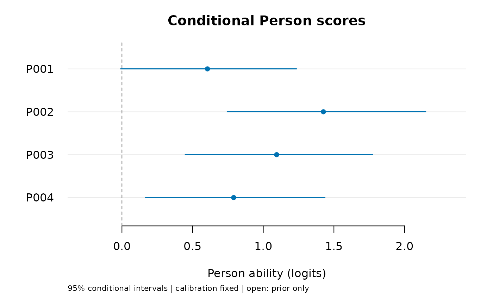

Score Persons using a fixed testlet calibration
Source:R/api-testlet-scoring.R
predict.mfrm_testlet.RdRecompute Person scores from all supplied rows, integrating local effects within each Person/testlet block and conditioning on fitted calibration.
Usage
# S3 method for class 'mfrm_testlet'
predict(
object,
newdata = NULL,
level = 0.95,
quad_points = object$settings$quad_points,
missing = if (is.null(newdata)) object$settings$missing else "fail",
persons = NULL,
...
)
# S3 method for class 'mfrm_testlet_scores'
summary(object, ...)
# S3 method for class 'mfrm_testlet_scores'
print(x, ...)Arguments
- object
A ready
fit_mfrm_testlet()result.- newdata
Long-format ratings with the fitted column names.
NULLreuses the source assignment, including missing-score rows. New Person and testlet labels are allowed; every fixed-facet level must be known.- level
Conditional equal-tail posterior interval probability; default 0.95. These are not calibration-adjusted frequentist confidence intervals.
- quad_points
Local-effect quadrature order, 7 to 121. Default uses the fitting order; each Person is also checked at
2 * quad_points + 1.- missing
"fail"or"omit". Default reuses the fit's missing-score policy for source replay and requires explicit omission for new data.- persons
Distinct Person IDs to return, or
NULLfor all. This selects outputs while retaining the complete supplied scoring roster.- ...
Unused.
- x
A scoring result.
Value
An mfrm_testlet_scores object with one table row per requested
Person, omitted-row accounting, block sizes, settings, calibration and
prediction-source metadata for mfrm_results().
summary() reports all statuses; plot() returns plot_data() when
draw = FALSE. Saved scoring results need no live optimizer.
Details
All supplied rows for a Person are scored jointly. This does not
append to cached responses or condition on a stored local-effect mode.
To add ratings for an existing Person, supply that Person's complete set
of ratings once, with memberships that correctly identify effects shared
within that set. Scores from separate calls are not automatically linked
within a Person or testlet. No fixed effects are re-estimated.
Unequal block sizes do not imply equal block weights. The influence of an
additional response depends on its block and the fitted model; integrating
local effects is not a general correction for assignment or content bias.
See vignette("mfrmr-testlet-applications") for a complete-roster
comparison of one-point changes in five- versus two-criterion tasks.
EAP, posterior SD and intervals use continuous ability integration. Interval
endpoints invert the continuous CDF rather than a finite quadrature-grid
CDF. Local-effect integration is compared at two orders; errors or unresolved
differences retain a row with unavailable scores and an explanation.
An explicitly omitted, entirely missing Person returns the fitted or
specified mean-zero normal ability population
with status "prior_only", not evidence of measured average ability.
Calibration is held fixed, including ability and testlet variances. If the
fitted ability variance is zero, all requested Persons retain unavailable
rows with a reason; no zero-width ability interval is reported. At an estimated
zero variance this is scoring under that fitted submodel, not evidence that
dependence is absent. Prior/posterior terminology refers to latent Person
scoring; calibration remains frequentist MML. A 480-dataset same-source
simulation estimating both variances, replayed after correcting numerical
start selection, found Person-interval coverage of 94.4% with 120 Persons
and 91.7% with 24 Persons under balanced positive local dependence;
coverage was 93.3% in one
sparse, unequal-block condition with 120 Persons. The original numerical
failures and their repair remain separately documented. Accounting for
dependence improved coverage relative to ordinary RSM, but did not consistently improve EAP
mean squared error. See vignette("mfrmr-testlets") for the comparison,
Monte Carlo uncertainty and numerical-selection correction.
These intervals neither correct calibration-estimation uncertainty nor
guarantee 95% coverage for each fixed ability. Person contrasts and
simultaneous decisions are not provided by this route.
Examples
example <- readRDS(system.file("examples", "extended-models.rds", package = "mfrmr"))
fit <- example$testlet$fit
scores <- example$testlet$scores
# To recompute these conditional scores:
# ratings <- load_mfrmr_data("example_core")
# scores <- predict(fit, persons = as.character(unique(ratings$Person)[1:4]))
# Selecting outputs retains the complete source roster for model maps.
scores$table
#> Person Observed Testlets Estimate ConditionalSD Lower Upper
#> 1 P001 16 4 0.6051601 0.3174878 -0.009460006 1.236019
#> 2 P002 16 4 1.4255340 0.3581934 0.744853076 2.150047
#> 3 P003 16 4 1.0950556 0.3379523 0.447620707 1.773399
#> 4 P004 16 4 0.7909065 0.3236000 0.166906739 1.436372
#> Status IntegrationDifference Reason
#> 1 available_conditional 4.484260e-15
#> 2 available_conditional 2.886580e-15
#> 3 available_conditional 2.220446e-15
#> 4 available_conditional 1.554312e-15
plot(scores)
